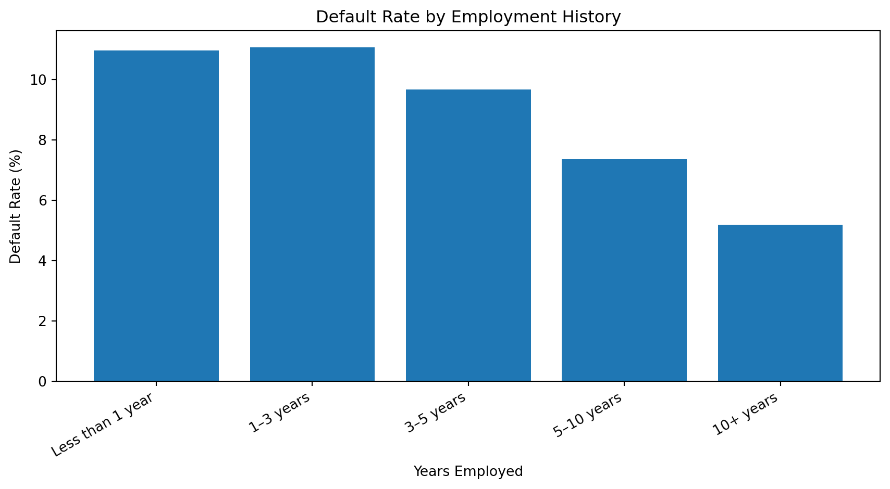

Home Credit provides loans to consumers who may have limited traditional credit histories, making it more difficult to assess whether an applicant will be able to repay a loan. The business problem is to improve the identification of applicants who are more likely to experience repayment difficulty while avoiding unnecessary rejection of applicants who are capable of repaying. For this EDA, TARGET is the outcome of interest, where a value of 1 represents an applicant who experienced repayment difficulty and 0 represents an applicant who did not. The purpose of the analysis is to identify data-quality issues and applicant characteristics that may help explain differences in repayment risk before predictive modeling begins.
What questions will this EDA answer?
The exploratory analysis will address the following questions:
What do the training and test datasets contain, and what types of variables are available?
How much data is missing, and which variables have the greatest missingness?
Are there unusual, special, or potentially invalid values that need to be addressed before modeling?
Is repayment difficulty uncommon enough to create a class-imbalance problem?
Are there duplicate applications or application IDs?
How does default risk vary across applicant income levels?
How does default risk vary across age groups?
How does default risk vary across credit amounts?
How does employment history relate to default risk?
Which categorical applicant characteristics show the largest differences in default rates?
Which numeric variables appear most strongly associated with repayment difficulty?
Description of the Data
What do the training and test datasets contain?
import pandas as pd# Load the Home Credit application datasetstrain = pd.read_csv("application_train.csv")test = pd.read_csv("application_test.csv")# Report basic dataset dimensionsprint("Training data shape:", train.shape)print("Test data shape:", test.shape)# Check whether the application ID is unique in each datasetprint("Training SK_ID_CURR unique:", train["SK_ID_CURR"].is_unique)print("Test SK_ID_CURR unique:", test["SK_ID_CURR"].is_unique)# Check whether the target variable is availableprint("TARGET in training data:", "TARGET"in train.columns)print("TARGET in test data:", "TARGET"in test.columns)
Training data shape: (307511, 122)
Test data shape: (48744, 121)
Training SK_ID_CURR unique: True
Test SK_ID_CURR unique: True
TARGET in training data: True
TARGET in test data: False
The training dataset contains 307,511 applications and 122 variables, while the test dataset contains 48,744 applications and 121 variables. SK_ID_CURR is unique in both datasets, indicating that each row represents one unique current loan application. The training dataset contains the TARGET outcome variable, while the test dataset does not. This means the training data can be used to examine relationships with repayment difficulty, while the test data is intended for later prediction rather than evaluation of observed outcomes.
What types of variables are available?
# Count variables by data typedtype_counts = train.dtypes.value_counts()print("Variable types in training data:")print(dtype_counts)# Identify categorical and numeric columnscategorical_cols = train.select_dtypes(include=["object"]).columns.tolist()numeric_cols = train.select_dtypes(exclude=["object"]).columns.tolist()print("\nNumber of categorical variables:", len(categorical_cols))print("Number of numeric variables:", len(numeric_cols))# Show examples of each typeprint("\nExample categorical variables:")print(categorical_cols[:10])print("\nExample numeric variables:")print(numeric_cols[:10])
Variable types in training data:
float64 65
int64 41
object 16
Name: count, dtype: int64
Number of categorical variables: 16
Number of numeric variables: 106
Example categorical variables:
['NAME_CONTRACT_TYPE', 'CODE_GENDER', 'FLAG_OWN_CAR', 'FLAG_OWN_REALTY', 'NAME_TYPE_SUITE', 'NAME_INCOME_TYPE', 'NAME_EDUCATION_TYPE', 'NAME_FAMILY_STATUS', 'NAME_HOUSING_TYPE', 'OCCUPATION_TYPE']
Example numeric variables:
['SK_ID_CURR', 'TARGET', 'CNT_CHILDREN', 'AMT_INCOME_TOTAL', 'AMT_CREDIT', 'AMT_ANNUITY', 'AMT_GOODS_PRICE', 'REGION_POPULATION_RELATIVE', 'DAYS_BIRTH', 'DAYS_EMPLOYED']
The training data contains a mix of numeric and categorical variables, with 106 numeric variables and 16 categorical variables. The available features cover several business-relevant areas, including applicant demographics, income, employment, housing, loan amount, repayment amount, and household characteristics. This mix of variable types should allow the analysis to examine both financial capacity and applicant characteristics that may be associated with repayment difficulty. The categorical variables will require different treatment from the numeric variables during later modeling, so identifying these groups early is important for data preparation.
Do the application columns match the data dictionary?
# Load the Home Credit data dictionarydictionary = pd.read_csv("HomeCredit_columns_description.csv", encoding="latin1")# Check the table names used in the dictionaryprint("Relevant table names in the dictionary:")print( dictionary.loc[ dictionary["Table"].astype(str).str.contains("application", case=False, na=False),"Table" ].unique())# Keep only the main application train/test tableapplication_dictionary = dictionary[ dictionary["Table"].astype(str).str.strip()=="application_{train|test}.csv"].copy()# Get documented application column namesdocumented_columns =set( application_dictionary["Row"].dropna().astype(str).str.strip())# Get actual training-data columnsactual_columns =set(train.columns)# Compare the two sets of columnsmissing_from_dictionary =sorted(actual_columns - documented_columns)documented_but_not_in_train =sorted(documented_columns - actual_columns)print("\nTraining columns:", len(actual_columns))print("Documented application columns:", len(documented_columns))print("\nColumns in training data but not found in dictionary:")print(missing_from_dictionary)print("\nColumns documented but not found in training data:")print(documented_but_not_in_train)
Relevant table names in the dictionary:
['application_{train|test}.csv' 'previous_application.csv']
Training columns: 122
Documented application columns: 122
Columns in training data but not found in dictionary:
[]
Columns documented but not found in training data:
[]
The application training dataset matches the Home Credit data dictionary. All 122 columns in the training data are documented, and all 122 documented application columns are present in the training dataset. No column-level discrepancies were identified, so the data dictionary appears consistent with the application data used for this EDA.
Data Integrity
How much data is missing?
# Calculate missing-value counts and percentagesmissing_counts = train.isna().sum()missing_percent = (missing_counts /len(train)) *100# Combine into a summary tablemissing_summary = pd.DataFrame({"Missing_Count": missing_counts,"Missing_Percent": missing_percent})# Keep only variables with missing valuesmissing_summary = missing_summary[missing_summary["Missing_Count"] >0]# Sort from highest to lowest missing percentagemissing_summary = missing_summary.sort_values( by="Missing_Percent", ascending=False)# Display the 15 variables with the most missing dataprint("Number of variables with missing values:", len(missing_summary))print("\nTop 15 variables by missing percentage:")print(missing_summary.head(15).round(2))
Missing data is a significant issue in the training dataset, with 67 variables containing at least some missing values. Several property-related variables, such as common-area measurements, non-living apartment measurements, and building-year information, are missing for more than two-thirds of applicants. This level of missingness suggests that some variables may provide limited value unless the missing values themselves carry meaningful information. For later modeling, variables with extremely high missingness should be reviewed carefully and may need to be excluded, transformed, or handled with explicit missing-value indicators rather than filled in automatically. I would not remove rows simply because these fields are missing, because that could eliminate a large share of the applicant population.
Does missingness relate to default risk?
# Identify variables with the most missing valuestop_missing_vars = missing_summary.head(5).index.tolist()# Compare default rates for missing vs. non-missing valuesmissing_target_results = []for col in top_missing_vars: missing_rate = train.loc[train[col].isna(), "TARGET"].mean() *100 present_rate = train.loc[train[col].notna(), "TARGET"].mean() *100 missing_target_results.append({"Variable": col,"Default_Rate_Missing": missing_rate,"Default_Rate_Present": present_rate })missing_target_summary = pd.DataFrame(missing_target_results)print("Default rates for missing vs. non-missing values:")print(missing_target_summary.round(2))
Missingness appears to be related to repayment risk for several of the most incomplete variables. For the variables examined, applicants with missing values have default rates around 8.6%, compared with about 6.9% for applicants whose values are present. This suggests that missingness may not be completely random and may itself contain useful information about applicant risk. For later modeling, I would consider creating missing-value indicators for highly incomplete variables rather than simply imputing the missing values and discarding the fact that they were originally absent.
Are there unusual or impossible values?
# Review selected numeric variables for suspicious or impossible valuesvariables_to_check = ["AMT_INCOME_TOTAL","AMT_CREDIT","AMT_ANNUITY","DAYS_BIRTH","DAYS_EMPLOYED","CNT_CHILDREN"]# Display minimum, median, and maximum valuessummary_checks = train[variables_to_check].agg(["min", "median", "max"]).Tprint("Selected numeric variable checks:")print(summary_checks)# Check the known special value in DAYS_EMPLOYEDspecial_employment_count = (train["DAYS_EMPLOYED"] ==365243).sum()special_employment_percent = special_employment_count /len(train) *100print("\nApplicants with DAYS_EMPLOYED = 365243:")print(special_employment_count)print("Percent of applicants:")print(round(special_employment_percent, 2))
Selected numeric variable checks:
min median max
AMT_INCOME_TOTAL 25650.0 147150.0 117000000.0
AMT_CREDIT 45000.0 513531.0 4050000.0
AMT_ANNUITY 1615.5 24903.0 258025.5
DAYS_BIRTH -25229.0 -15750.0 -7489.0
DAYS_EMPLOYED -17912.0 -1213.0 365243.0
CNT_CHILDREN 0.0 0.0 19.0
Applicants with DAYS_EMPLOYED = 365243:
55374
Percent of applicants:
18.01
The numeric checks identified an important data-quality issue in DAYS_EMPLOYED. While most employment values are negative, representing days before the application date, 55,374 applicants have a value of 365,243, representing 18.01% of the training data. This value is not a realistic employment duration and should be treated as a special or missing-value code rather than as an actual number of days employed. Several variables also contain extreme values, including very high reported income and a maximum of 19 children. These values should be reviewed further before modeling to determine whether they are valid observations or influential outliers. For later analysis, I would recode the 365243 employment value as missing or as a separate indicator rather than using it as a normal numeric value.
Is the target variable imbalanced?
# Count repayment outcomes in the training datatarget_counts = train["TARGET"].value_counts().sort_index()# Calculate percentagestarget_percent = train["TARGET"].value_counts( normalize=True).sort_index() *100# Combine counts and percentagestarget_summary = pd.DataFrame({"Count": target_counts,"Percent": target_percent})print("TARGET distribution:")print(target_summary.round(2))
The target variable is highly imbalanced. About 91.93% of applicants are in the non-default group, while only 8.07% are in the repayment-difficulty group. This means a model could achieve high overall accuracy by mostly predicting the majority class, even if it performs poorly at identifying applicants who are actually at risk. For later modeling, evaluation should therefore emphasize measures that reflect performance on the minority class, such as sensitivity/recall, precision, ROC AUC, or other business-relevant error measures rather than relying on accuracy alone.
Are there duplicate observations?
# Check for duplicate rowsduplicate_rows = train.duplicated().sum()# Check for duplicate application IDsduplicate_ids = train["SK_ID_CURR"].duplicated().sum()print("Duplicate rows:", duplicate_rows)print("Duplicate SK_ID_CURR values:", duplicate_ids)
Duplicate rows: 0
Duplicate SK_ID_CURR values: 0
No duplicate rows or duplicate SK_ID_CURR values were found in the training data. This confirms that each application appears only once and supports using SK_ID_CURR as the unique application-level identifier. No deduplication step is needed before further analysis or modeling.
Exploratory Analysis
How does default risk vary by income?
import matplotlib.pyplot as plt# Create income quintiles with roughly equal numbers of applicantsincome_data = train[["AMT_INCOME_TOTAL", "TARGET"]].dropna().copy()income_data["Income_Group"] = pd.qcut( income_data["AMT_INCOME_TOTAL"], q=5, duplicates="drop")# Calculate default rate by income groupincome_summary = ( income_data .groupby("Income_Group", observed=False)["TARGET"] .agg(["count", "mean"]) .reset_index())income_summary["Default_Rate_Percent"] = income_summary["mean"] *100print("Default rate by income group:")print( income_summary[ ["Income_Group", "count", "Default_Rate_Percent"] ].round(2))# Plot default rate by income groupplt.figure(figsize=(10, 5))plt.bar( income_summary["Income_Group"].astype(str), income_summary["Default_Rate_Percent"])plt.title("Default Rate by Applicant Income Group")plt.xlabel("Applicant Income Group")plt.ylabel("Default Rate (%)")plt.xticks(rotation=30, ha="right")plt.tight_layout()plt.show()
Default risk does not decline consistently as income increases. The three lower-to-middle income groups have fairly similar default rates, ranging from about 8.2% to 8.7%, while the highest-income group has a noticeably lower default rate of 6.52%. This suggests that income may provide some useful information about repayment risk, but it is unlikely to be a strong predictor by itself. A possible explanation is that repayment ability depends on income relative to other obligations, such as loan size and required payments, rather than income alone. I would keep income as a candidate predictor but also examine ratios such as credit amount or annuity relative to income.
How does default risk vary by age?
# Convert DAYS_BIRTH into age in yearsage_data = train[["DAYS_BIRTH", "TARGET"]].dropna().copy()age_data["Age"] = (-age_data["DAYS_BIRTH"] /365.25)# Group applicants into age rangesage_data["Age_Group"] = pd.cut( age_data["Age"], bins=[20, 30, 40, 50, 60, 70], right=False)# Calculate default rate by age groupage_summary = ( age_data .groupby("Age_Group", observed=False)["TARGET"] .agg(["count", "mean"]) .reset_index())age_summary["Default_Rate_Percent"] = age_summary["mean"] *100print("Default rate by age group:")print( age_summary[ ["Age_Group", "count", "Default_Rate_Percent"] ].round(2))# Plot default rate by age groupplt.figure(figsize=(9, 5))plt.bar( age_summary["Age_Group"].astype(str), age_summary["Default_Rate_Percent"])plt.title("Default Rate by Applicant Age Group")plt.xlabel("Applicant Age Group")plt.ylabel("Default Rate (%)")plt.xticks(rotation=30, ha="right")plt.tight_layout()plt.show()
Default risk decreases consistently as applicant age increases. Applicants in their 20s have the highest default rate at 11.44%, while applicants in their 60s have the lowest rate at 4.92%. This pattern suggests that age is meaningfully associated with repayment risk in this dataset. One possible explanation is that older applicants may have more stable income, employment, or financial histories than younger applicants. I would keep age as an important candidate predictor, while avoiding the assumption that age itself causes repayment difficulty.
Default risk does not consistently increase as credit amount increases. The middle credit group has the highest default rate at 10.05%, while the highest credit group has the lowest rate at 6.08%. This suggests that credit amount alone does not explain repayment difficulty. One possible reason is that the affordability of a loan depends on the applicant’s income and required payment amount, not simply the total amount borrowed. I would keep credit amount as a candidate predictor, but later analysis should also examine credit amount relative to income and annuity payments.
How does default risk vary by employment history?
# Select employment history and targetemployment_data = train[["DAYS_EMPLOYED", "TARGET"]].copy()# Remove the special DAYS_EMPLOYED value identified during data-integrity checksemployment_data = employment_data[ employment_data["DAYS_EMPLOYED"] !=365243].dropna()# Convert negative days employed into positive years employedemployment_data["Years_Employed"] = (-employment_data["DAYS_EMPLOYED"] /365.25)# Group applicants by years of employmentemployment_data["Employment_Group"] = pd.cut( employment_data["Years_Employed"], bins=[0, 1, 3, 5, 10, float("inf")], labels=["Less than 1 year","1–3 years","3–5 years","5–10 years","10+ years" ], right=False)# Calculate default rate by employment groupemployment_summary = ( employment_data .groupby("Employment_Group", observed=False)["TARGET"] .agg(["count", "mean"]) .reset_index())employment_summary["Default_Rate_Percent"] = ( employment_summary["mean"] *100)print("Default rate by employment history:")print( employment_summary[ ["Employment_Group", "count", "Default_Rate_Percent"] ].round(2))# Plot default rate by employment historyplt.figure(figsize=(9, 5))plt.bar( employment_summary["Employment_Group"].astype(str), employment_summary["Default_Rate_Percent"])plt.title("Default Rate by Employment History")plt.xlabel("Years Employed")plt.ylabel("Default Rate (%)")plt.xticks(rotation=30, ha="right")plt.tight_layout()plt.show()
Default rate by employment history:
Employment_Group count Default_Rate_Percent
0 Less than 1 year 27982 10.97
1 1–3 years 61472 11.07
2 3–5 years 46902 9.67
3 5–10 years 64871 7.37
4 10+ years 50910 5.19

Default risk generally decreases as employment history becomes longer. Applicants with less than three years of employment have default rates around 11%, while applicants with more than ten years of employment have a default rate of 5.19%. This suggests that employment stability may be an important indicator of repayment risk. One possible explanation is that longer employment history may reflect more stable income and financial circumstances. I would keep employment history as an important candidate predictor, while continuing to treat the special 365243 value separately rather than as a valid employment duration.
Which categorical variables show the largest differences in default risk?
# Select several business-relevant categorical variablescategorical_to_check = ["NAME_INCOME_TYPE","NAME_EDUCATION_TYPE","NAME_HOUSING_TYPE","NAME_FAMILY_STATUS"]# Calculate default-rate range for each categorical variablecategorical_results = []for col in categorical_to_check: rates = ( train.groupby(col)["TARGET"] .agg(["count", "mean"]) .reset_index() )# Keep categories with at least 100 applicants rates = rates[rates["count"] >=100] default_range = ( rates["mean"].max() - rates["mean"].min() ) *100 categorical_results.append({"Variable": col,"Default_Rate_Range": default_range })categorical_summary = pd.DataFrame(categorical_results)categorical_summary = categorical_summary.sort_values("Default_Rate_Range", ascending=False)print("Difference between highest and lowest category default rates:")print(categorical_summary.round(2))# Plot the default-rate range for each categorical variableplt.figure(figsize=(9, 5))plt.bar( categorical_summary["Variable"], categorical_summary["Default_Rate_Range"])plt.title("Variation in Default Rate Across Categorical Variables")plt.xlabel("Categorical Variable")plt.ylabel("Difference Between Highest and Lowest Default Rate (%)")plt.xticks(rotation=30, ha="right")plt.tight_layout()plt.show()
Among the categorical variables examined, NAME_EDUCATION_TYPE shows the largest variation in default rates, with a 9.10 percentage-point difference between its highest- and lowest-risk categories. Housing type shows the next-largest difference at 5.74 percentage points, while income type and family status show smaller differences. This suggests that education-related categories may contain useful information about repayment risk. I would retain these categorical variables for later modeling, with particular attention to education type, while also examining the individual category rates before drawing conclusions about which specific groups are higher risk.
# Calculate default rate by education categoryeducation_summary = ( train.groupby("NAME_EDUCATION_TYPE")["TARGET"] .agg(["count", "mean"]) .reset_index())education_summary["Default_Rate_Percent"] = education_summary["mean"] *100# Keep categories with at least 100 applicantseducation_summary = education_summary[ education_summary["count"] >=100].sort_values("Default_Rate_Percent", ascending=False)print("Default rate by education type:")print( education_summary[ ["NAME_EDUCATION_TYPE", "count", "Default_Rate_Percent"] ].round(2))# Plot default rate by education typeplt.figure(figsize=(10, 5))plt.bar( education_summary["NAME_EDUCATION_TYPE"], education_summary["Default_Rate_Percent"])plt.title("Default Rate by Education Type")plt.xlabel("Education Type")plt.ylabel("Default Rate (%)")plt.xticks(rotation=30, ha="right")plt.tight_layout()plt.show()
Default risk varies meaningfully across education levels. Applicants with lower secondary education have the highest default rate at 10.93%, while applicants with higher education have a substantially lower rate of 5.36%. The academic degree group has the lowest observed rate at 1.83%, although that category contains only 164 applicants, so it should be interpreted cautiously because of the small sample size. Overall, education level appears to contain useful information about repayment risk. I would retain education type as a candidate predictor while avoiding strong conclusions from very small categories.
Which numeric variables appear most strongly related to default risk?
# Select numeric variablesnumeric_data = train.select_dtypes(include=["number"])# Calculate correlations with TARGETtarget_correlations = ( numeric_data .corr()["TARGET"] .drop("TARGET") .dropna())# Rank variables by absolute correlation with TARGETcorrelation_summary = ( target_correlations .abs() .sort_values(ascending=False) .head(10))print("Top 10 numeric variables by absolute correlation with TARGET:")print(correlation_summary.round(3))# Create a bar chartplt.figure(figsize=(10, 6))plt.bar( correlation_summary.index, correlation_summary.values)plt.title("Top Numeric Variables Associated with Default Risk")plt.xlabel("Numeric Variable")plt.ylabel("Absolute Correlation with TARGET")plt.xticks(rotation=45, ha="right")plt.tight_layout()plt.show()
The three external source variables (EXT_SOURCE_1, EXT_SOURCE_2, and EXT_SOURCE_3) have the strongest numeric relationships with default risk among the variables examined. Their correlations are noticeably larger than those of the remaining numeric variables, suggesting that these external scores may contain especially useful information for identifying repayment risk. Age (DAYS_BIRTH) also shows a meaningful relationship, which is consistent with the earlier age-group analysis. However, the correlations are still moderate rather than extremely strong, indicating that no single numeric variable is likely to explain default risk by itself. I would prioritize the external source variables, age, and regional risk measures for later modeling while combining them with other financial and categorical predictors.
Conclusion
What data issues need to be addressed before modeling?
Several data-quality issues should be addressed before modeling. Missing values are widespread, with 67 variables containing missing data and some property-related variables missing for more than two-thirds of applicants. The DAYS_EMPLOYED variable also contains the special value 365243 for 18.01% of applicants, which should not be treated as a normal employment duration. The target is highly imbalanced, with only 8.07% of applicants experiencing repayment difficulty. Before modeling, I would handle highly missing variables carefully, recode special values appropriately, and use evaluation measures that account for the target imbalance.
Which variables appear most useful?
The EDA suggests that several variables may be especially useful for predicting repayment difficulty. The external source variables show the strongest numeric relationships with the target. Age and employment history also show clear differences in default rates, with younger applicants and applicants with shorter employment histories experiencing higher default rates. Education type shows meaningful separation among categorical variables, while income and credit amount appear less useful when considered individually. I would therefore prioritize external scores, age, employment history, education, and selected regional indicators while still testing financial variables in combination rather than relying on them alone.
How did the EDA change or confirm the business problem?
The EDA supports the original business problem of improving Home Credit’s ability to identify applicants who are more likely to experience repayment difficulty, but it also shows that risk cannot be explained by a single financial measure. Income and credit amount alone show relatively weak or non-linear relationships with default, while age, employment history, education, and external credit-related scores show clearer differences. This suggests that Home Credit should use a combination of applicant characteristics and financial information when assessing repayment capacity. The findings also reinforce the need for careful data preparation before developing a predictive model.
AI Use
I used AI to help me understand the expected format and organization of the EDA notebook. I also used AI to troubleshoot code errors when they occurred and to help explain why certain code was not running correctly. I reviewed the suggested fixes and used them to continue the analysis, while the final results and interpretations were based on the output from my own notebook.